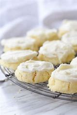

Melting Moments

Ingredients
Switch to Steps
-
3 cups Flour
-
1 cup Corn Starch
-
1-2 tsp Salt
-
1/2 cup Powdered Sugar
-
2 cups Unsalted Butter
-
2 tsp Vanilla Extract
-
Parchment Paper
Steps
Switch to Ingredients
-
In a medium bowl, whisk together the flour, corn starch and salt. Set aside.
-
In another bowl cream the butter and sugar until light and fluffy, about 2 minutes.
-
Beat in the vanilla extract.
-
Add the flour mixture and beat until incorporated.
-
Cover and refrigerare the dought for at least one hour or until firm.
-
Preheat oven to 350F and place rack in center of oven.
-
Line two baking sheets with parchment paper.
-
When dough is firm, form into 1" balls and place on the prepared baking sheets, spaced about 1" apart.
-
Bake for 12-14 minutes or until the edges of the cookies start to brown.
-
Remove from oven and place on a wire rack to cool for about 5 minutes.
-
Meanwhile line another baking pan or tray with parchment paper.
Sprinkle about half of the powdered sugar onto the bottom of the pan
and then place the slightly cooled cookies on top of the sugar.
-
Put the remaining sugar in a fine strainer or sieve abd sprinkle on top of the cookies.